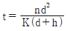
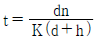
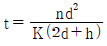
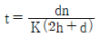
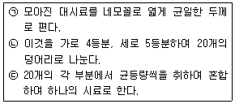
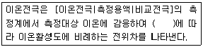
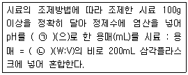
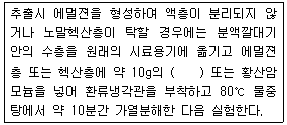

폐기물처리기사 (2017-03-05 기출문제)
1과목: 폐기물 개론
1. 폐기물 파쇄의 이점으로 가장 거리가 먼 것은?
- 압축 시에 밀도증가율이 크므로 운반비가 감소된다.
- 대형쓰레기에 의한 소각로의 손상을 방지할 수 있다.
- 매립 시 폐기물 입자의 표면적 감소로 매립지의 조기 안정화를 꾀할 수 있다.
- 곱게 파쇄하면 매립 시 복토가 필요 없거나 복토요 구량이 절감된다.
(정답률: 70%)

2. 도시 쓰레기 수거 계획을 수립할 때 가장 우선으로 고려하여야 할 사항은?
- 수거노선
- 수거빈도
- 수거지역 특성
- 수거인부의 수
(정답률: 85%)
3. 쓰레기의 가연분, 소각잔사의 미연분, 고형물 중의 유기분을 측정하기 위한 열작감량(안전연소가능량, ignition loss)에 대한 설명으로 가장 거리가 먼 것은?
- 고형물 중 탄산염, 염화물, 황산염 등과 같은 무기 물의 감량은 없다.
- 소각잔사는 매립처분에 있어 중요한 의미를 갖는다.
- 소각로의 운전상태를 파악할 수 있는 중요한 지표이다.
- 소각로의 종류, 처리용량에 따른 화격자 면적을 설정하는데 참고가 된다.
(정답률: 69%)
4. 돌, 코르크 등의 불투명한 것과 유리 같은 투명한 것의 분리에 이용되는 선별방법은?
- floatation
- optical sorting
- inertial separation
- electrostatic separation
(정답률: 79%)
5. 도시폐기물을 파쇄할 경우 X90 = 2.5cm로 하여 구한 X0(특성입자, cm)는? (단, Rosin Rammler 모델 적용, n=1)
- 약 1.1
- 약 1.3
- 약 1.5
- 약 1.7
(정답률: 70%)
6. 쓰레기를 소각한 후 남은 재의 중량은 소각 전 쓰레기 중량의 약 1/5이다. 재의 밀도가 2.5 ton/m3이고, 재의 용적이 3.3m3 이 될 때 소각 전 원래 쓰레기의 중량(ton)은?
- 12.3
- 23.6
- 34.8
- 41.3
(정답률: 64%)
7. 폐기물 생산량의 결정 방법으로 적합하지 않은 것은?
- 생산량을 직접 추정하는 방법
- 도시의 규모가 커짐을 이용하여 추정하는 방법
- 주민의 수입 또는 매상고와 같은 이차적인 자료를 이용하여 추정하는 방법
- 원자재 사용으로부터 추정하는 방법
(정답률: 59%)
8. 투입량이 1 ton/hr 이고 회수량이 600 kg/hr(그 중 회수대상물질은 500 kg/hr)이며, 제거량은 400 kg/hr(그 중 회수대상물질은 100 kg/hr)일 때 선별효율(%)은? (단, Worrell식 적용)(오류 신고가 접수된 문제입니다. 반드시 정답과 해설을 확인하시기 바랍니다.)
- 약 63
- 약 69
- 약 74
- 약 78
(정답률: 54%)
9. 함수율이 77%인 하수슬러지 20ton을 함수율 26%인 1000ton의 폐기물과 섞어서 함께 처리하고자 한다. 이 혼합 폐기물의 함수율(%)은? (단, 비중은 1.0기준)
- 27
- 29
- 31
- 34
(정답률: 64%)
10. 적환장에 관한 설명으로 가장 거리가 먼 것은?
- 수거지점으로부터 처리장까지의 거리가 먼 경우 중간에 설치한다.
- 슬러지수송이나 공기수송방식을 사용할 때에는 설치가 어렵다.
- 작은 용기로 수거한 쓰레기를 대형트럭에 옳겨 싣는 곳이다.
- 저밀도 주거지역이 존재할 때 설치한다.
(정답률: 66%)
11. 쓰레기의 입도를 분석하였더니 입도누적곡선상의 10%, 30%, 60%, 90%의 입경이 각각 2, 6, 16, 25mm 이었다면 이 쓰레기의 균등계수는?
- 2.0
- 3.0
- 8.0
- 13.0
(정답률: 66%)
12. 파쇄기의 마모가 적고 비용이 적게 소요되는 장점이 있으나, 금속, 고무의 파쇄는 어렵고, 나무나 플라스틱류, 콘크리트덩이, 건축폐기물의 파쇄에 이용되며, Rotary Mill식, Impact crusher 등이 해당되는 파쇄기는?
- 충격파쇄기
- 습식파쇄기
- 왕복전단파쇄기
- 압축파쇄기
(정답률: 65%)
13. 침출수의 처리에 대한 설명으로 가장 거리가 먼것은?
- BOD/COD ＞ 0.5 인 초기 매립지에선 생물학적 처리가 효과적이다.
- BOD/COD ＜ 0.1 인 오래된 매립지에선 물리화학적 처리가 효과적이다.
- 매립지의 매립대상물질이 가연성쓰레기가 주종인 경우 물리화학적 처리가 주로 이루어진다.
- 매립초기에는 생물학적처리가 주체가 되지만 유기 물질의 안정화가 이루어지는 매립 후기에는 물리화학적 처리가 주로 이루어진다.
(정답률: 68%)
14. LCA의 구성요소로 가장 거리가 먼 것은?
- 자료평가
- 개선평가
- 목록분석
- 목적 및 범위의 설정
(정답률: 73%)
15. 1982년 세베스 사건을 계기로 1989년 체결된 국제조약으로, 유해폐기물 국가 간 이동 및 그 처분의 규제에 관한 내용을 담고 있는 협약은?
- 리우협약
- 바젤협약
- 베를린협약
- 함부르크협약
(정답률: 83%)
16. 가연성분이 30%(중량기준)이고, 밀도가 620kg/m3 인 쓰레기 5m3 중 가연성분의 중량(kg)은?
- 650
- 750
- 870
- 930
(정답률: 73%)
17. 아파트단지의 세대수 400, 한 세대당 가족수 4인, 단위용적 당 쓰레기 중량 120 kg/m3, 적재용량 8 m3 의 트럭 7대로 2일마다 수거할 때, 1인 1일당 쓰레기 배출량(kg)은?
- 약 2.1
- 약 2.5
- 약 3.1
- 약 3.5
(정답률: 66%)
18. 폐기물의 성상분석 단계로 가장 알맞은 것은?
- 건조 → 물리적 조성분석 → 분류(가연, 불연성) → 절단 및 분쇄 → 화학적 조성분석
- 건조 → 분류(가연, 불연성) → 물리적 조성분석 → 발열량 측정 → 화학적 조성분석
- 밀도측정 → 물리적 조성분석 → 건조 → 분류(가연, 불연성) → 절단 및 분쇄 → 화학적 조성분석
- 밀도측정 → 전처리 → 물리적 조성분석 → 분류(가연, 불연성) → 건조 → 화학적 조성분석
(정답률: 80%)
19. 쓰레기의 발생량 조사법에 대한 설명으로 옳은 것은?
- 적재차량 계수분석은 쓰레기의 밀도 또는 압축정도를 정확히 파악할 수 있는 장점이 있다.
- 직접계근법은 적재차량 계수분석에 비해 작업량은 적지만 정확한 쓰레기 발생량의 파악이 어렵다.
- 물질수지법은 산업폐기물의 발생량 추산 시 많이 이용되는 방법이다.
- 쓰레기의 발생량은 각 지역의 규모나 특성에 따라 많은 차이가 있어 주로 총발생량으로 표기한다.
(정답률: 69%)
20. 인구 100000인 어느 도시의 1인 1일 쓰레기 배출량이 1.8 kg 이다. 쓰레기 밀도가 0.5 ton/m3 이라면 적재량 15 m3 이 트럭이 처리장으로 한달 동안 운반해야 할 횟수(회)는? (단, 한 달은 30일, 트럭은 1대 기준)
- 510
- 620
- 720
- 840
(정답률: 66%)
2과목: 폐기물 처리 기술
21. 혐기성 소화단계를 가스분해단계, 산생성단계, 메탄생성 단계로 나눌 때 산생성단계에서 생성되는 물질과 가장 거리가 먼 것은?
- 글리세린
- 케톤
- 알콜
- 알데하이드
(정답률: 63%)
22. 소각장에서 발생하는 비산재를 매립하기 위해 소각재 매립지를 설계하고자 한다. 내부 마찰각 φ는 30°, 부착도 c는 1 kPa, 소각재의 유해성과 특성변화 때문에 안정에 필요한 안전인자 FS는 2.0일 때, 소각재 매립지의 최대 경사각 β(°)은?
- 14.7
- 16.1
- 17.5
- 18.5
(정답률: 40%)
23. Belt Press를 이용한 탈수에 영향을 주는 운전요소와 가장 거리가 먼 것은?
- 벨트의 종류
- 세척수의 유량과 압력
- 폴리머 주입량과 주입 지점
- Bowl 최대속도 유지 시간
(정답률: 49%)
24. 퇴비화 공정의 설계 및 조작인자에 대한 설명으로 가장 거리가 먼 것은?
- 공급원료의 C/N비는 대략 30:1 정도이다.
- 포기, 혼합, 온도조절 등이 필요조건이다.
- 퇴비화의 유기물 분해반응은 혐기성이 가장 빠르다.
- 함수율은 50~60% 정도이다.
(정답률: 55%)
25. 매립지 기체의 회수재활용을 위한 조건으로 알맞은 것은?
- 폐기물 1 kg당 0.5 m3 이상의 기체가 생성되어야 한다.
- 폐기물 속에 약 60% 이상의 분해 가능한 물질이 포함되어야 한다.
- 발생기체의 70% 이상을 포집할 수 있어야 한다.
- 기체의 발열량이 2200 kcal/Sm3 이상이어야 한다.
(정답률: 52%)
26. 매립방법에서 침출수 유량조정조의 기능에 대한 설명으로 잘못된 것은?
- 침출수처리 전처리 기능
- 침출수 수질 균일화
- 우수 배제 기능
- 유입수 수량 변동 조정
(정답률: 52%)
27. 쓰레기와 하수처리장에서 얻어진 슬러지를 함께 매립하려고 한다. 쓰레기와 슬러지의 고형물 함량이 각각 80%, 30%라고 하면 쓰레기와 슬러지를 8:2로 섞었을 때, 이 혼합폐기물의 함수율(%)은? (단, 무게 기준이며 비중은 1.0 으로 가정함)
- 30
- 50
- 70
- 80
(정답률: 42%)
28. 호기성 퇴비화 공정 설계인자에 대한 설명으로 틀린 것은?
- 퇴비화에 적당한 수분함량은 50~60%로 40% 이하가 되면 분해율이 감소한다.
- 온도는 55~60℃로 유지시켜야 하며 70℃를 넘어서면 공기공급량을 증가시켜 온도를 적정하게 조절한다.
- C/N비가 20 이하이면 질소가 암모니아로 변하여 pH를 증가시켜 악취를 유발시킨다.
- 산소 요구량은 체적당 20~30%의 산소를 공급하는 것이 좋다.
(정답률: 50%)
29. 매립지에서 침출된 침출수의 농도가 반으로 감소하는데 약 3.3년이 걸린다면 이 침출수의 농도가 90% 분해되는데 걸리는 시간(년)은? (단, 1차 반응기준)
- 약 7
- 약 9
- 약 11
- 약 13
(정답률: 68%)
30. 소각공정에 비해 열분해 과정의 장점이라 볼 수 없는 것은?
- 배기가스가 적다.
- 보조연료의 소비량이 적다.
- 크롬의 산화가 억제된다.
- NOx의 발생량이 억제된다.
(정답률: 63%)
31. 침출수가 점토층을 통과하는데 소요되는 시간을 계산하는 식으로 옳은 것은? (단, t=통과시간(year), d=점토층두께(m), h=침출수 수두(m), K=투수계수(m/year), n=유효공극율)




(정답률: 75%)
32. 토양의 양이온치환용량(CEC)이 10 meq/100g이고, 염기포화도가 70%라면, 이 토양에서 H+이 차지하는 양(meq/100g)은?
- 3
- 5
- 7
- 10
(정답률: 65%)
33. 토양증기추출공정에서 발생되는 2차 오염 배가스 처리를 위한 흡착방법에 대한 설명으로 옳지 않은 것은?
- 배가스의 온도가 높을수록 처리성능은 향상된다.
- 배가스 중의 수분을 전단계에서 최대한 제거해 주어야 한다.
- 흡착제의 교체주기는 파과지점을 설계하여 정한다.
- 흡착반응기내 채널링(channeling) 현상을 최소화하기 위하여 배가스의 선속도를 적정하게 조절한다.
(정답률: 64%)
34. 수분함량 95%(무게%)의 슬러지에 응집제를 소량 가해 농축시킨 결과 상등액과 침전 슬러지의 용적비가 3:5 이었다. 이 침전 슬러지의 함수율(%)은? (단, 응집제의 주입량은 소량이므로 무시, 농축전후 슬러지 비중 = 1)
- 94
- 92
- 90
- 88
(정답률: 55%)
35. 혐기성 소화조에서 일반적으로 사용되는 단위용적에 대한 유기물 부하율은 kg·VS/m3·day로 표시하는데 고율소화조의 유기물 부하율로 가장 적절한 것은?
- 0.2
- 0.6
- 1.1
- 1.8
(정답률: 41%)
36. 침출수 처리를 위한 Fenton 산화법에 관한 설명으로 틀린 것은?
- 여분의 과산화수소수는 후처리의 미생물 성장에 영향을 줄 수 있다.
- 최적반응을 위해 침출수 pH를 9~10으로 조정한다.
- Fenton액을 첨가하여 난분해성 유기물질을 산화시킨다.
- Fenton액은 철염과 과산화수소수를 포함한다.
(정답률: 57%)
37. 폐기물부담금제도에 해당되지 않는 품목은?
- 500mL 이하의 살충제 용기
- 자동차 타이어
- 껌
- 1회용 기저귀
(정답률: 68%)
38. 침출수 집배수 설비에 대한 설명으로 가장 거리가 먼 것은?
- 집배수층은 일반적으로 자갈을 많이 사용한다.
- 집배수관의 최소직경은 30cm 이상이다.
- 집배수설비는 발생하는 침출수를 차수설비로부터 제거시키는 설비이다.
- 집배수층의 바닥경사는 2~4% 정도이다.
(정답률: 55%)
39. 유기적 고형화 기술에 대한 설명으로 틀린 것은? (단, 무기적 고형화 기술과 비교)
- 수밀성이 크며, 처리비용이 고가이다.
- 미생물, 자외선에 대한 안정성이 강하다.
- 방사성 폐기물처리에 적용한다.
- 최종 고화체의 체적 증가가 다양하다.
(정답률: 56%)
40. 폐기물 매립지에서 매립기간 경과에 따라 크게 초기조절단계, 전이단계, 산형성 단계, 메탄발효단계, 숙성단계의 총 5단계로 구분이 되는데, 4단계인 메탄발효단계에서 나타나는 현상과 가장 근접한 것은?
- 수소농도가 증가함
- 산 형성 속도가 상대적으로 증가함
- 침출수의 전도도가 증가함
- pH가 중성값보다 약간 증가함
(정답률: 59%)
3과목: 폐기물 소각 및 열회수
41. 메탄을 공기비 1.1에서 완전 연소시킬 경우 건조연소가스 중의 CO2 max(%, vol)는?
- 약 10.6
- 약 12.3
- 약 14.5
- 약 15.4
(정답률: 46%)
42. 로타리 킬른식(Rotary Kiln) 소각로의 단점으로 옳지 않은 것은?
- 처리량이 적은 경우 설치비가 높다.
- 구형 및 원통형 물질은 완전연소가 끝나기 전에 굴러 떨어질 수 있다.
- 로에서의 공기유출이 크므로 종종 대량의 과잉공기가 필요하다.
- 습식가스 세정시스템과 함께 사용할 수 없다.
(정답률: 66%)
43. 액체연료의 연소속도에 영향을 미치는 인자로 거리가 먼 것은?
- 분무입경
- 기름방울과 공기의 혼합율
- 충분한 체류시간
- 연료의 예열온도
(정답률: 40%)
44. 연소에 대한 설명으로 틀린 것은?
- 연소공정은 폐기물 주입 → 연소 → 연소가스 처리 → 재의 처분 등으로 구성되어 있다.
- 연소기 설계 시 폐기물의 예상 생산량보다 2배 이상을 처리할 수 있는 크기로 설계하여야 한다.
- 폐기물을 연소기에 주입시키는 방법에는 회분식과 연속식이 있다.
- 폐기물은 강우에 의해 젖지 않도록 지붕을 씌워서 보관한다.
(정답률: 66%)
45. CH4 75%, CO2 5%, N2 8%, O2 12%로 조성된 기체연료 1 Sm3을 10 Sm3의 공기로 연소한다면 이때 공기비는?
- 1.22
- 1.32
- 1.42
- 1.52
(정답률: 35%)
46. RDF(Refuse Derived Fuel)가 갖추어야 하는 조건에 관한 설명으로 옳지 않은 것은?
- 제품의 함수율이 낮아야 한다.
- RDF용 소각로 제작이 용이하도록 발열량이 높지 않아야 한다.
- 원료 중에 비가연성 성분이나 연소 후 잔류하는 재의 양이 적어야 한다.
- 조성 배합율이 균일하여야 하고 대기오염이 적어야 한다.
(정답률: 70%)
47. 폐기물의 소각시설에서 발생하는 분진의 특징에 대한 설명으로 틀린 것은?
- 흡수성이 작고 냉각되면 고착하기 어렵다.
- 부피에 비해 비중이 작고 가볍다.
- 입자가 큰 분진은 가스 냉각장치 등의 비교적 가스 통과속도가 느린 부분에서 침강하기 때문에 분진의 평균입경이 작다.
- 염화수소나 황산화물을 포함하기 때문에 설비의 부식을 방지하기 위해 일반적으로 가스냉각장치 출구에서 250℃ 정도의 온도가 되어야 한다.
(정답률: 67%)
48. 폐기물의 연소 및 열분해에 관한 설명으로 잘못된 것은?
- 열분해는 무산소 또는 저산소 상태에서 유기성 폐기물을 열분해시키는 방법이다.
- 습식산화는 젖은 폐기물이나 슬러지를 고온, 고압하에서 산화시키는 방법이다.
- Steam Reforming은 산화 시에 스팀을 주입하여 일산화탄소와 수소를 생성시키는 방법이다.
- 가스화는 완전연소에 필요한 양보다 과잉 공기 상태에서 산화시키는 방법이다.
(정답률: 59%)
49. 증기터어빈의 분류관점에 따른 터어빈 형식이 잘못 연결된 것은?
- 증기 작동방식 - 충동 터어빈, 반동 터어빈, 혼합식 터어빈
- 흐름수 - 단류 터어빈, 복류 터어빈
- 피구동기(발전용) - 직결용 터어빈, 감속형 터어빈
- 증기 이용방식 - 반경류 터어빈, 축류 터어빈
(정답률: 56%)
50. 유동층 소각로의 Bed(층)물질이 갖추어야 하는 조건으로 틀린 것은?
- 비중이 클 것
- 입도분포가 균일할 것
- 불활성일 것
- 열충격에 강하고 융점이 높을 것
(정답률: 64%)
51. 탄소 85%, 수소 14%, 황 1% 조성의 중유 연소시 배기가스 조성은 (CO2)+(SO2)가 13%, (O2)가 3%, (CO)가 0.5%였다. 건조연소가스 중 SO2농도 (ppm)는?
- 약 525
- 약 575
- 약 625
- 약 675
(정답률: 37%)
52. 황화수소 1 Sm3의 이론연소 공기량(Sm3)은?
- 7.1
- 8.1
- 9.1
- 10.1
(정답률: 50%)
53. 배기가스 성분 중 O2량이 5.25%(부피기준)였을 때 완전연소로 가정한다면 공기비는? (단, N2는 79%)
- 1.33
- 1.54
- 1.84
- 1.94
(정답률: 58%)
54. 유동층 소각로(Fluidized Bed Incinerator)의 특성에 대한 설명으로 옳지 않은 것은?
- 미연소분 배출이 많아 2차 연소실이 필요하다.
- 반응시간이 빨라 소각시간이 짧다.
- 기계적 구동부분이 상대적으로 적어 고장률이 낮다.
- 소량의 과잉공기량으로도 연소가 가능하다.
(정답률: 71%)
55. 소각로를 이용하여 폐기물을 소각할 때의 장점으로 옳지 않은 것은?
- 폐기물의 부피를 최대한 감소시켜 매립지 면적을 감소
- 폐기물 중의 부패성 유기물, 병원균 등을 완전 산화를 통한 무해화
- 소각공정을 통해 발생된 열에너지를 회수
- 2차 오염물질을 발생시키지 않음
(정답률: 73%)
56. 연소실 내 가스와 폐기물의 흐름에 관한 설명으로 가장 거리가 먼 것은?
- 병류식은 폐기물의 발열량이 낮은 경우에 적합한 형식이다.
- 교류식은 향류식과 병류식의 중간적인 형식이다.
- 교류식은 중간 정도의 발열량을 가지는 폐기물에 적합하다.
- 역류식은 폐기물의 이송방향과 연소가스의 흐름이 반대로 향하는 형식이다.
(정답률: 66%)
57. 기체연료에 관한 내용으로 옳지 않은 것은?
- 적은 과잉공기(10~20%)로 완전연소가 가능하다.
- 유황 함유량이 적어 SO2 발생량이 적다.
- 저질연료로 고온 얻기와 연료의 예열이 어렵다.
- 취급 시 위험성이 크다.
(정답률: 66%)
58. 연소에 대한 설명으로 옳지 않은 것은?
- 증발연소는 비교적 용융점이 낮은 고체가 연소되기 이전에 용융되어 액체와 같이 표면에서 증발되는 기체가 연소하는 현상
- 분해연소는 가열에 의해 열분해된 휘발하기 쉬운 성분이 표면으로부터 떨어진 곳에서 연소하는 현상
- 액면연소는 산소나 산화가스가 고체표면이나 내부의 빈 공간에 확산되어 표면반응하는 현상
- 내부연소는 물질 자체가 포함하고 있는 산소에 의해서 연소하는 현상
(정답률: 60%)
59. 연소기 내에 단회로(short-circuit)가 형성되면 불완전 연소된 가스가 외부로 배출된다. 이를 방지하기 위한 대책으로 가장 적절한 것은?
- 보조버너를 가동시켜 연소온도를 증대시킨다.
- 2차연소실에서 체류시간을 늘린다.
- Grate의 간격을 줄인다.
- Baffle을 설치한다.
(정답률: 63%)
60. 착화온도에 대한 설명으로 옳지 않은 것은?
- 화학결합의 활성도가 클수록 착화온도는 낮다.
- 분자구조가 간단할수록 착화온도는 낮다.
- 화학반응성이 클수록 착화온도는 낮다.
- 화학적으로 발열량이 클수록 착화온도는 낮다.
(정답률: 74%)
4과목: 폐기물 공정시험기준(방법)
61. 검정곡선 작성용 표준용액과 시료에 동일한 양의 내부표준물질을 첨가하여 시험분석 절차, 기기 또는 시스템의 변동으로 발생하는 오차를 보정하기 위해 사용하는 방법은?
- 절대검정곡선법(external standard method)
- 표준물질첨가법(standard addition method)
- 상대검정곡선법(internal standard calibration)
- 백분율법
(정답률: 58%)
62. 유도결합플라스마발광광도법(ICP)에 관한 설명중 틀린 것은?
- ICP는 시료를 고주파유도코일에 의하여 형성된 알곤 플라스마에 도입하여 4000~6000K에서 기저된 원자가 여기상태로 이동할 때 방출하는 발광선 및 발광광도를 측정하여 원소의 정성 및 정량분석에 이용하는 방법이다.
- ICP는 알곤가스를 플라스마 가스로 사용하여 수정발진식 고주파 발생기로부터 발생된 27.13 MHZ 주파수영역에서 유도코일에 의하여 플라스마를 발생시킨다.
- ICP의 구조는 중심에 저온, 저전자 밀도의 영역이 형성되어 도너츠 형태로 되는데, 이 도너츠 모양의 구조가 ICP의 특징이다.
- 플라스마의 온도는 최고 15000K까지 이른다.
(정답률: 64%)
63. 폐기물 시료용기에 기재해야 할 사항으로 틀린것은?
- 시료번호
- 채취시간 및 일기
- 채취책임자 이름
- 채취장비
(정답률: 72%)
64. 기름성분-중량법(노말헥산 추출방법)에 대한 설명 중 옳지 않은 것은?
- 폐기물 중 비교적 휘발되지 않는 탄화수소 및 탄화수소유도체, 그리이스 유상물질 등을 측정하기 위한 시험이다.
- 시료 중에 있는 기름성분의 분해방지를 위하여 수산화나트륨(0.1N)을 사용하여 pH 11 이상으로 조정한다.
- 시료를 노말헥산으로 추출한 후 무수황산나트륨으로 수분을 제거하여야 한다.
- 노말헥산을 휘산하기 위해 알맞은 온도는 80℃정도이다.
(정답률: 50%)
65. 유기인 정량 시 검량선을 작성하기 위해 사용되는 표준용액이 아닌 것은?
- 이피엔 표준액
- 파리티온 표준액
- 다이아지논 표준액
- 바비트레이트 표준액
(정답률: 66%)
66. 유기인을 기체크로마토그래피로 분석할 때 헥산으로 추출하면 메틸디메톤의 추출율이 낮아질 수 있으므로 이에 대체하여 사용하는 물질로 가장 적합한 것은?
- 다이클로로메탄과 헥산의 혼합액(15:85)
- 메틸에틸케톤과 에탄올의 혼합액(15:85)
- 메틸에틸케톤과 헥산의 혼합액(15:85)
- 다이클로로메탄과 에탄올의 혼합액(15:85)
(정답률: 51%)
67. 흡광광도법에서 기본원리인 Lambert Beer 법칙에 관한 설명으로 틀린 것은?
- 흡광도는 광이 통과하는 용액층의 두께에 비례한다.
- 흡광도는 광이 통과하는 용액층의 농도에 비례한다.
- 흡광도는 용액층의 투광도에 비례한다.
- 램버트비어의 법칙을 식으로 표현하면 A = εcℓ이다. (단, A : 흡광도, ε : 흡광계수, c : 농도, ℓ : 빛의 투과거리)
(정답률: 73%)
68. 다음에 설명한 시료 축소 방법은?

- 구획법
- 등분법
- 균등법
- 분할법
(정답률: 72%)
69. 소각재 5g의 Pb 함유량을 측정하기 위해 질산-염산분해법의 전처리 과정을 거친 100mL 용액의 Pb 농도를 원자흡수분광광도계를 이용하여 측정하였더니 10 mg/L이었을 때, 소각재의 Pb 함유량(mg/kg)은?
- 100
- 200
- 300
- 400
(정답률: 58%)
70. 원자흡수분광광도법에 의한 수은 분석방법에 관한 설명으로 틀린 것은?
- 수은증기를 253.7 nm 파장에서 측정한다.
- 시료 중 수은을 이염화주석을 넣어 금속수은으로 환원시킨다.
- 시료 중 염화물이온이 다량 함유된 경우에는 과망간산칼륨 분해 후 헥산으로 이들 물질을 추출 분리한 다음 실험한다.
- 이 실험에 의한 폐기물 중 수은의 정량한계는 0.00⑤ mg/L이다.
(정답률: 45%)
71. 수분 및 고형물을 중량법으로 측정할 때 사용하는 데시케이터에 관한 내용으로 옳은 것은?
- 실리카겔과 묽은 황산을 넣어 사용한다.
- 실리카겔과 염화칼슘이 담겨 있는 것을 사용한다.
- 무수황산나트륨이 담겨 있는 것을 사용한다.
- 활성탄 분말과 염화칼륨을 넣어 사용한다.
(정답률: 48%)
72. 중금속 분석에 있어, 산화분해가 어려운 유기물을 다량 함유하고 있는 시료의 전처리 방법으로 적당한 것은?
- 질산 분해법
- 질산-염산 분해법
- 질산-과염소산 분해법
- 질산-과염소산-불화수소산 분해법
(정답률: 62%)
73. 유도결합플라스마발광광도 기계의 토치에 흐르는 운반물질, 보조물질, 냉각물질의 종류는 몇 종류의 물질로 구성되는가?
- 2종의 액체와 1종의 기체
- 1종의 액체와 2종의 기체
- 1종의 액체와 1종의 기체
- 1종의 기체
(정답률: 54%)
74. 자외선/가시선분광법에 의한 수은 측정 시, 전처리된 시료에서 수은의 분리추출을 위하여 사용되는 용액은?
- 과망간산칼륨
- 염산히드록실아민
- 염화제일주석
- 디티존사염화탄소
(정답률: 40%)
75. 성상에 따른 시료의 채취방법에 대한 설명으로 틀린 것은?
- 콘크리트 고형화물이 소형일 때는 적당한 채취도구를 사용하며, 한번에 일정량씩을 채취하여야 한다.
- 고상혼합물의 경우, 시료는 적당한 시료채취 도구를 사용하여 한번에 일정량씩을 채취하여야 한다.
- 액상혼합물이 용기에 들어 있을 때에는 교란되어 혼합되지 않도록 하여 균일한 상태로 채취한다.
- 액상혼합물의 경우는 원칙적으로 최종지점의 낙하구에서 흐르는 도중에 채취한다.
(정답률: 61%)
76. 폐기물공정시험기준에서 규정하고 있는 진공에 해당되지 않는 것은?
- 10 mmHg
- 13 torr
- 0.03 atm
- 0.18 mH2O
(정답률: 53%)
77. 이온전극법에 관한 설명으로 ( )에 옳은 내용은?

- 네른스트(Nernst)식
- 램버트(Lambert)식
- 페러데이식
- 플래밍식
(정답률: 63%)
78. 시료 용출시험방법에 관한 설명에서 ( )에 알맞은 것은?

- ㉠ 4.5~5.5, ㉡ 1:5
- ㉠ 4.5~5.5, ㉡ 1:10
- ㉠ 5.8~6.3, ㉡ 1:5
- ㉠ 5.8~6.3, ㉡ 1:10
(정답률: 73%)
79. 기름성분을 중량법으로 분석할 때에 관련된 내용으로 ( )에 옳은 내용은?

- 질산암모늄
- 염화나트륨
- 아비산나트륨
- 질산나트륨
(정답률: 46%)
80. 용출액 중의 PCBs 시험방법(기체크로마토그래프법)을 설명한 것으로 틀린 것은?
- 용출액 중의 PCBs를 헥산으로 추출한다.
- 전자포획형 검출기(ECD)를 사용한다.
- 정제는 활성탄칼럼을 사용한다.
- 용출용액의 정량한계는 0.00⑤ mg/L 이다.
(정답률: 58%)
5과목: 폐기물 관계 법규
81. 폐기물처리시설을 설치·운영하는 자는 일정한 기간마다 정기검사를 받아야 한다. 소각시설의 경우 최초 정기검사는?
- 사용개시일부터 5년이 되는 날
- 사용개시일부터 3년이 되는 날
- 사용개시일부터 2년이 되는 날
- 사용개시일부터 1년이 되는 날
(정답률: 53%)
82. 폐기물처리시설 중 기계적 재활용시설이 아닌것은?
- 연료화시설
- 탈수·건조 시설
- 응집·침전 시설
- 증발·농축 시설
(정답률: 74%)
83. 폐기물처분시설인 매립시설의 기술관리인의 자격기준에 해당되지 않는 것은?
- 화공기사
- 대기환경기사
- 토목기사
- 토양환경기사
(정답률: 53%)
84. 폐기물 발생 억제 지침 준수의무 대상 배출자의 업종으로 틀린 것은?
- 비금속 광물제품 제조업
- 전기, 가스, 증기 및 공기조절 공급업
- 1차 금속 제조업
- 봉제 · 의복 제품 제조업
(정답률: 56%)
85. 변경허가를 받지 아니하고 폐기물처리업의 허가 사항을 변경한 자에 대한 벌칙기준으로 맞는 것은?
- 3년 이하의 징역 또는 3천만원 이하의 벌금
- 2년 이하의 징역 또는 2년만원 이하의 벌금
- 1년 이하의 징역 또는 1천만원 이하의 벌금
- 6월 이하의 징역 또는 600만원 이하의 벌금
(정답률: 46%)
86. 폐기물처리업의 업종 구분과 영업 내용의 범위를 벗어나는 영업을 한 자에 대한 벌칙기준은?
- 1년 이하의 징역이나 5백만원 이하의 벌금
- 1년 이하의 징역이나 1천만원 이하의 벌금
- 2년 이하의 징역이나 2천만원 이하의 벌금
- 3년 이하의 징역이나 3천만원 이하의 벌금
(정답률: 62%)
87. 폐기물처리업의 변경허가를 받아야 하는 중요사항으로 틀린 것은? (단, 폐기물 중간처분업, 폐기물 최종처분업 및 폐기물 종합처분업인 경우)
- 주차장 소재지의 변경
- 운반차량(임시차량은 제외한다.)의 증차
- 처분대상 폐기물의 변경
- 폐기물 처분시설이 신설
(정답률: 61%)
88. 대통령령으로 정하는 폐기물처리시설을 설치 ·운영하는 자는 그 폐기물처리시설의 설치 · 운영이 주변 지역에 미치는 영향을 몇 년마다 조사하고 그 결과를 누구에게 제출하여야 하는가?
- 3년, 유역환경청장
- 3년, 환경부장관
- 5년, 유역환경청장
- 5년, 환경부장관
(정답률: 59%)
89. 지정폐기물배출자는 사업장에서 발생되는 지정 폐기물인 폐산을 보관개시일부터 최소 며칠을 초과하여 보관하여서는 안되는가?
- 90일
- 70일
- 60일
- 45일
(정답률: 63%)
90. 지정폐기물 종류에 관한 설명으로 틀린 것은?
- 폐수처리 오니 : 환경부령으로 정하는 물질을 함유한 것으로 환경부장관이 고시한 시설에서 발생되는 것으로 한정한다.
- 폐산 : 액체상태의 폐기물로서 수소이온농도지수가 2.0 이하인 것에 한정한다.
- 폐알칼리 : 액체상태의 폐기물로서 수소이온농도지수가 12.5 이상인 것으로 한정하며 수산화칼륨 및 수산화나트륨을 포함한다.
- 분진 : 소각시설에서 발생된 것으로 한정하되, 대기오염 방지시설에서 포집된 것은 제외한다.
(정답률: 58%)
91. 폐기물처리 기본계획에 포함되어야 하는 사항이 아닌 것은?
- 폐기물의 기본관리여건 및 전망
- 폐기물의 수집·운반·보관 및 그 장비·용기 등의 개선에 관한 사항
- 재원의 확보 계획
- 폐기물의 감량화와 재활용 등 자원화에 관한 사항
(정답률: 42%)
92. 설치승인을 받아 폐기물처리시설을 설치한 자가 그 폐기물처리시설의 사용을 끝내고자 할 때는 환경부장관에게 신고하여야 하는데, 그 신고를 하지 않은 경우 과태료 부과기준은?
- 1천만원 이하
- 500만원 이하
- 300만원 이하
- 100만원 이하
(정답률: 38%)
93. 주변지역 영향 조사대상 폐기물처리시설에 대한 기준은? (단, 폐기물처리업자가 설치, 운영함)
- 매립용량 1만 세제곱미터 이상의 사업장 지정폐기물 매립시설
- 매립용량 3만 세제곱미터 이상의 사업장 지정폐기물 매립시설
- 매립면적 1만 제곱미터 이상의 사업장 지정폐기물 매립시설
- 매립면적 3만 제곱미터 이상의 사업장 지정폐기물 매립시설
(정답률: 60%)
94. 음식물류 폐기물 발생억제 계획의 수립주기는?
- 1년
- 2년
- 3년
- 5년
(정답률: 63%)
95. 지정폐기물 처리계획서 등을 제출하여야 하는 경우의 폐기물과 양에 대한 기준이 올바르게 연결된 것은?
- 폐농약, 광재, 분진, 폐주물사 - 각각 월 평균 100킬로그램 이상
- 고형화처리물, 폐촉매, 폐흡착제, 폐유 - 각각 월평균 100킬로그램 이상
- 폐합성고분자화합물, 폐산, 폐알칼리 - 각각 월평균 100킬로그램 이상
- 오니 - 월 평균 300킬로그램 이상
(정답률: 37%)
96. 설치를 마친 후 검사기관으로부터 정기검사를 받아야 하는 환경부령으로 정하는 폐기물처리시설만을 옳게 짝지은 것은?
- 소각시설-매립시설-멸균분쇄시설-소각열회수시설
- 소각시설-매립시설-소각열분해시설-멸균분쇄시설
- 소각시설-매립시설-분쇄·파쇄시설-열분해시설
- 매립시설-증발·농축·정제·반응시설-멸균분쇄시설-음식물류 폐기물처리시설
(정답률: 48%)
97. 기술관리인을 두어야 할 폐기물처리시설 기준으로 틀린 것은? (단, 폐기물처리업자가 운영하는 폐기물처리시설은 제외)
- 시멘트 소성로(폐기물을 연료로 사용하는 경우로 한정한다.)로서 1일 재활용능력이 10톤 이상인 시설
- 용해로(폐기물에서 비철금속을 추출하는 경우로 한정한다.)로서 시간당 재활용능력이 600킬로그램 이상인 시설
- 멸균분쇄시설로서 시간당 처분능력이 100킬로그램 이상인 시설
- 사료화·퇴비화 또는 연료화 시설로서 1일 재활용 능력이 5톤 이상인 시설
(정답률: 43%)
98. 관리형 매립시설에서 발생되는 침출수의 배출허용 기준으로 옳은 것은? (단, 청정지역 기준, 항목 : 부유물질량, 단위 : mg/L)
- 10
- 20
- 30
- 40
(정답률: 65%)
99. 다음 중 3년 이하의 징역이나 3천만원 이하의 벌금에 처하는 경우가 아닌 것은?
- 거짓이나 그 밖의 부정한 방법으로 폐기물분석 전문기관으로 지정을 받거나 변경지정을 받은 자
- 다른 자의 명의나 상호를 사용하여 재활용 환경성평가를 하거나 재활용환경성평가기관지정서를 빌린 자
- 유해성기준에 적합하지 아니하게 폐기물을 재활용한 제품 또는 물질을 제조하거나 유통한 자
- 고의로 사실과 다른 내용의 폐기물분석 결과서를 발급한 폐기물분석전문기관
(정답률: 43%)
100. 폐기물처리업의 업종 구분과 영업 내용으로 틀린 것은?
- 폐기물 수집·운반업 : 폐기물을 수집하여 재활용 또는 처분 장소로 운반하거나 폐기물을 수출하기 위하여 수집·운반하는 영업
- 폐기물 중간처분업 : 폐기물 중간처분시설을 갖추고 폐기물을 소각 처분, 기계적 처분, 생물학적 처분, 그 밖에 환경부장관이 폐기물을 안전하게 중간처분할 수 있다고 인정하여 고시하는 방법으로 중간처분하는 영업
- 폐기물 종합처분업 : 폐기물처분시설을 갖추고 폐기물의 수집, 운반부터 최종처분까지 하는 영업
- 폐기물 최종처분업 : 폐기물 최종처분시설을 갖추고 폐기물을 매립 등(해역 배출은 제외한다.)의 방법으로 최종처분하는 영업
(정답률: 48%)